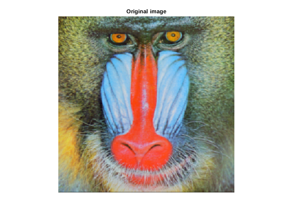
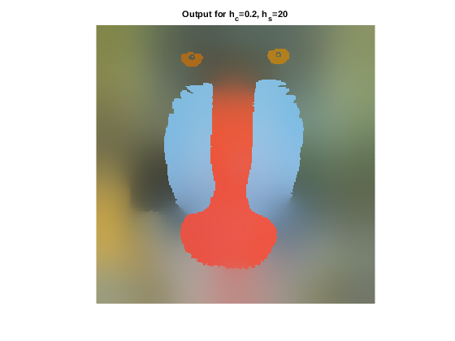
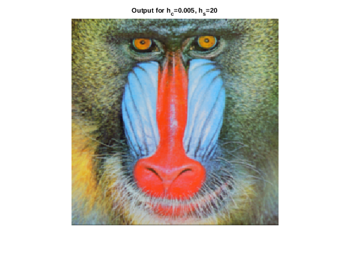
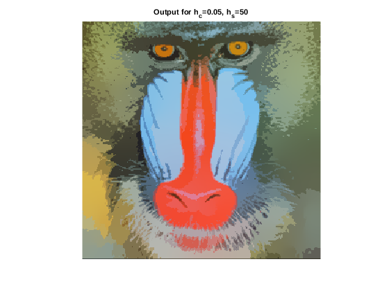
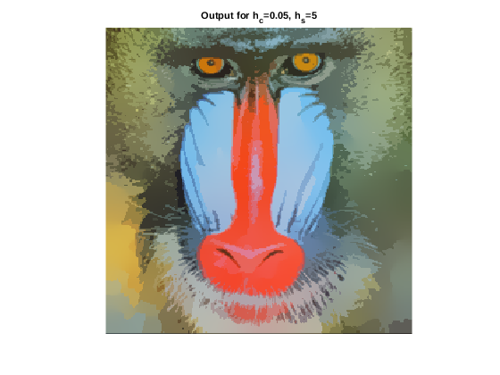

Mean-Shift Segmentation
We implemented the Mean-Shift algorithm by first downsampling the image (gaussian smoothing with \sigma=1 followed by resizing to half the size along both dimensions) and then scaling it to the range [0,1].
Contents
Parameter tuning
cntr = 0; for hc=0.005:0.005:0.1 for hs=5:5:30 res = myMeanShiftSegmentation(img, hc, hs); imwrite(res, ['../images/trial_',num2str(cntr),'.png']); cntr = cntr+1; end end
All resultant images were compared visually. We chose the best output by looking for meaningful and distinct (i.e. less interpolation between segments) segments, and found the following results:
% variables for displaying images myNumOfColors = 200; myColorScale = repmat((0:1/(myNumOfColors-1):1)',1,3); disp('Original image'); tic; img = im2single(imread('../data/baboonColor.png')); % smoothen the image img = imgaussfilt(img, 1); % downsample image img = imresize(img, 0.5); % image has been rescaled to [0,1] range % so hc has to be adjusted accordingly figure; imagesc(img); title('Original image'); colormap(myColorScale); daspect ([1 1 1]); axis tight; axis off; toc; tic; disp('Tuned output, h_c=0.05, h_s=20'); res = myMeanShiftSegmentation(img, 0.05, 20); figure; imagesc(res); title('Tuned output, h_c=0.05, h_s=20'); colormap(myColorScale); daspect ([1 1 1]); axis tight; axis off; % save image save(['../images/tunedBaboon.mat'], 'res'); toc; tic; disp('Output for h_c=0.2, h_s=20'); res = myMeanShiftSegmentation(img, 0.2, 20); figure; imagesc(res); title('Output for h_c=0.2, h_s=20'); colormap(myColorScale); daspect ([1 1 1]); axis tight; axis off; toc; tic; disp('Output for h_c=0.005, h_s=20'); res = myMeanShiftSegmentation(img, 0.005, 20); figure; imagesc(res); title('Output for h_c=0.005, h_s=20'); colormap(myColorScale); daspect ([1 1 1]); axis tight; axis off; toc; tic; disp('Output for h_c=0.05, h_s=50'); res = myMeanShiftSegmentation(img, 0.05, 50); figure; imagesc(res); title('Output for h_c=0.05, h_s=50'); colormap(myColorScale); daspect ([1 1 1]); axis tight; axis off; toc; tic; disp('Output for h_c=0.05, h_s=5'); res = myMeanShiftSegmentation(img, 0.05, 5); figure; imagesc(res); title('Output for h_c=0.05, h_s=5'); colormap(myColorScale); daspect ([1 1 1]); axis tight; axis off; toc;
Original image Elapsed time is 0.093338 seconds. Tuned output, h_c=0.05, h_s=20 Elapsed time is 79.566733 seconds. Output for h_c=0.2, h_s=20 Elapsed time is 80.835150 seconds. Output for h_c=0.005, h_s=20 Elapsed time is 86.300257 seconds. Output for h_c=0.05, h_s=50 Elapsed time is 82.222428 seconds. Output for h_c=0.05, h_s=5 Elapsed time is 80.574358 seconds.    
Observations
We can clearly see (from the output images generated by using neighborhood parameter values) that the chosen values are optimal. High values of h_c and h_s favour intermixing of segments (diffused boundaries) whereas lower values don't produce any significant changes.